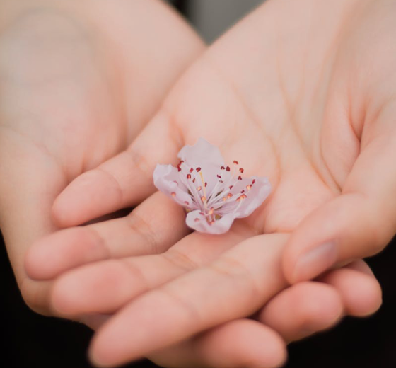

About

人の思いや背景を丁寧にくみ取ることを大切にしています。
言葉にならないニーズを感じ取り、デザインで応えていけたらと思います。
使う人に寄り添うものづくりを続けていきたいです。
使用ツール
・Illustrator・Photoshop・Figma
・Visual Studio Code（HTML/CSS・jQuery）

人の思いや背景を丁寧にくみ取ることを大切にしています。
言葉にならないニーズを感じ取り、デザインで応えていけたらと思います。
使う人に寄り添うものづくりを続けていきたいです。
・Illustrator・Photoshop・Figma
・Visual Studio Code（HTML/CSS・jQuery）